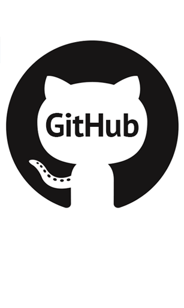

Wagner da Silva de Jesus Vale
São Paulo/SP
 Whatsapp
Whatsapp
wagner6528@gmail.com
 Github
Linkedin
Objetivo
Programador Web junior.
Conhecimentos Principais
- HTML
- CSS
- Javascript
- Bootstrap
Formação Acadêmica
- Cursando - Analise e Desenvolvimento de Sistema
Outros conhecimentos (Todos os niveis básico)
- Linguagens de Programação
- C#, PHP, Sql Oracle e Versionamento Git
Indioma
Resumo
2 anos aprendendo e praticando meus conhecimentos
sempre gostei de técnologia e agora tenho a oportunidade de
colocar em praticar, estou disposto aprender.